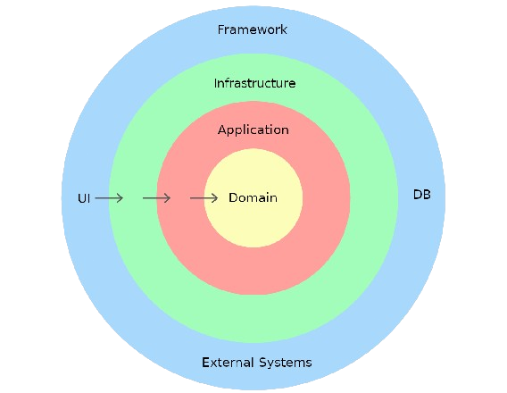

Domain-Driven Development (DDD) on tarkvaraarenduse metoodika, mis keskendub sügavalt äri domeenile või valdkonnale, millele rakendus on suunatud. Selle eesmärk on mõista ja mudeldada domeeni keerukust ning rakendada seejärel tarkvara arhitektuuri ja disaini selliselt, et see peegeldaks domeeni struktuuri ja nõudeid.
DDD lähenemine hõlmab tihedat koostööd domeeni eksperdiga või valdkonna spetsialistiga, et mõista domeeni keerukust, reegleid ja protsesse ning seejärel tõlkida need tarkvara mõisteteks ja mudeliteks.
Üks DDD olulisemaid kontseptsioone on "ubikvitoosne keel", mis on keel, mida kasutatakse domeeni mõistete ja protsesside kirjeldamiseks nii äri kui ka arendusmeeskondade vahel. See aitab luua ühist arusaama ja vähendada kommunikatsiooniprobleeme.
Domain-Driven Development soodustab ka pidevat iteratiivset arengut, kus tarkvara arhitektuuri ja disaini korrigeeritakse vastavalt domeeni mõistmisele ja muutuvatele nõuetele.
Lõpuks, DDD eesmärk on luua tarkvaralahendusi, mis on optimeeritud vastama konkreetselt äri vajadustele ja tagama tugeva seose rakenduse ja selle domeeni vahel.